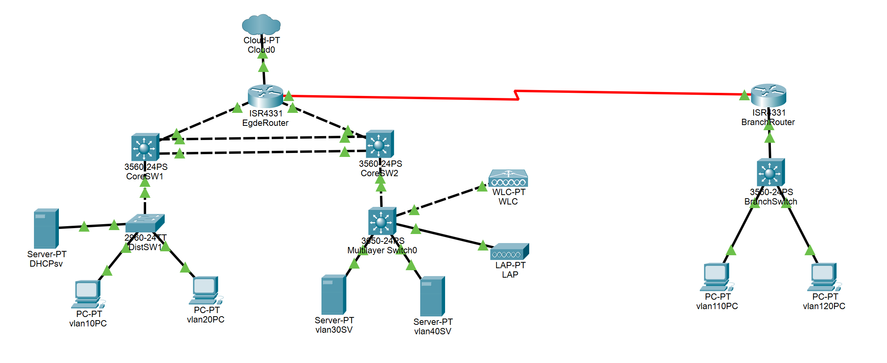

Aspiring Network Engineer
ネットワークエンジニア志望。Cisco実機・VLAN・OSPF・HSRP・WLCなどを使ったネットワーク構築経験あり。
ご連絡はこちらから →About
名前：西ノ原希空
学校：麻生情報ビジネス専門学校 4年制 3年生
卒業予定：2028年3月
ネットワーク・インフラに興味を持ち、 「ITが急速に進化し続けている中で、その進化を先導していけるエンジニア」を目指して学んでいます。
学校の実習環境（Cisco実機・WLC）でVLAN・ACL・OSPF・HSRPなどを構築しています。 几帳面な性格から設定を何度も確認する習慣があり、 インフラ特有の「確実さ」を大切にする姿勢につながっています。
FE・CCST・Linux Essentialsを取得し、現在はCCNAとLPIC-1、AWSを勉強中です。 自サービスの本番運用経験あり。
Works
構成概要：VLAN 4つ、OSPFエリア設計、HSRPでL3冗長化
工夫した点：放課後の実習時間を活用し、実際に手を動かして構築。トラブルシュートも含めて設定を何度も確認する習慣をつけた。

構成概要：本社・支社2拠点構成。VLAN/OSPF/HSRP/EtherChannel/DHCP/NAT/ACLを組み合わせた複合構成をPacket Tracerで設計・構築・動作確認済み。
工夫した点：HSRPをVLANごとにグループIDを分けて設計し、CoreSW1とCoreSW2で負荷分散する構成にした。
構成概要：AWS EC2 + Ubuntu + Nginx + Docker + GitHub Actionsで構築した本番運用中のポートフォリオサイト。 Let's EncryptとCertbotによるHTTPS化、カスタムポートによるSSHセキュリティ強化、NginxリバースプロキシでDockerコンテナにルーティングする構成を採用。
工夫した点：GitHubにpushするだけでGitHub ActionsがEC2にSSH接続し、git pull → docker build → コンテナ再起動までを完全自動化した。 インフラ構成をゼロから構築し、Grafanaによるサーバーリソース監視基盤も構築・運用中。